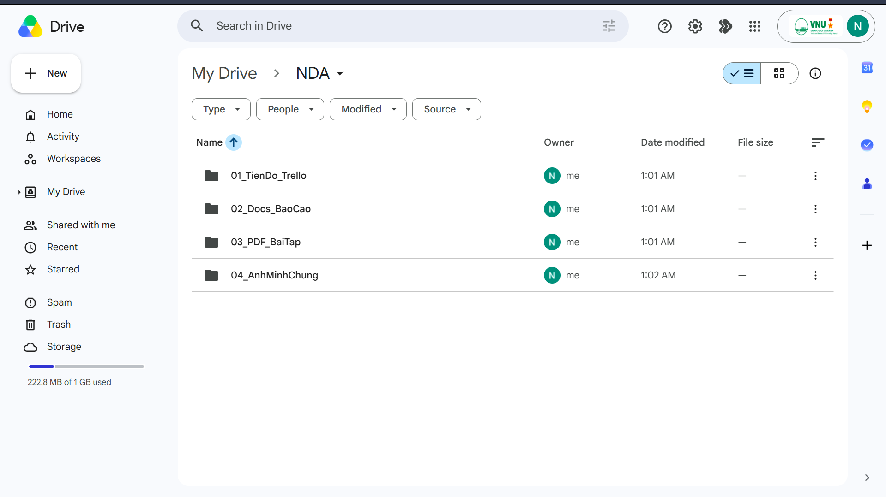
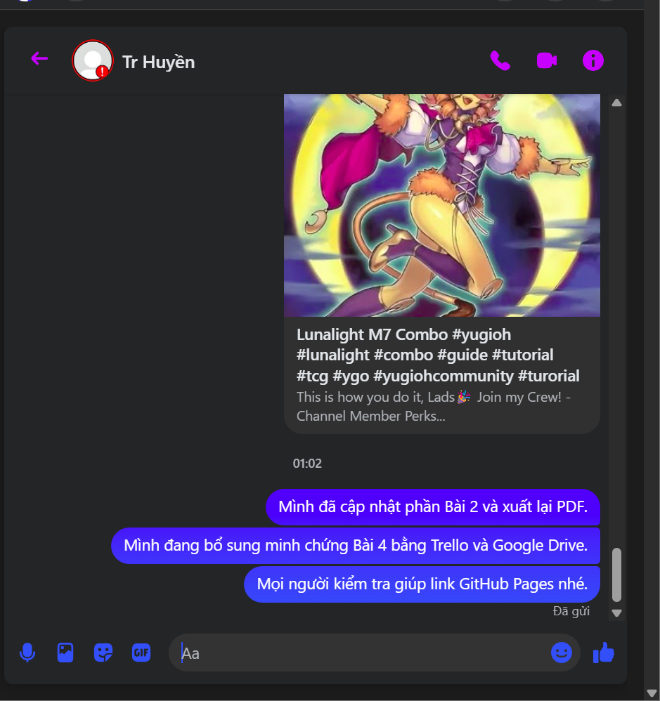

BÀI TẬP 4 · HỢP TÁC TRỰC TUYẾN
Trello, Google Drive và Messenger trong quá trình hoàn thiện Portfolio
Báo cáo thực hành phối hợp các công cụ đám mây theo từng vai trò cụ thể nhằm duy trì tiến độ thiết kế và nộp bài đúng hạn.
Sự phân vai rõ ràng của các công cụ
- Quản lý tiến độ (Trello): Trả lời câu hỏi “Việc gì đang ở trạng thái nào?” thông qua bảng Kanban trực quan.
- Quản lý tài nguyên (Google Drive): Trả lời câu hỏi “Tài liệu minh chứng, tệp PDF nằm ở đâu?” để đồng bộ hóa không thất lạc.
- Giao tiếp nhanh (Messenger): Trả lời câu hỏi “Ai cần cập nhật gấp cái gì, link chạy ổn định chưa?” để phản hồi ngay lập tức.
Quy trình phối hợp làm việc thực tế
- Trello: Tạo các cột trạng thái *Cần làm*, *Đang làm* và *Đã hoàn thành*. Phân chia thẻ tác vụ rõ ràng cho từng bài tập môn học.
- Google Drive: Thiết kế cấu trúc thư mục đồng bộ hóa lưu trữ (01_TienDo_Trello, 02_Docs_BaoCao, 03_PDF_BaiTap, 04_AnhMinhChung).
- Messenger: Nhóm trao đổi trực tuyến để nhắc hẹn, rà soát lỗi liên kết và kiểm tra đường dẫn website sau khi đăng lên.
Bảng phân tích giá trị tối ưu hóa công cụ
Tên công cụVai trò chínhGiá trị tối ưu quy trình
Trello KanbanQuản trị đầu việc, tiến độ thời gian.Trực quan hóa khối lượng công việc, tránh bỏ sót đầu mục bài thực hành.
Google Cloud DriveLưu trữ, sao lưu, đồng bộ hóa tự động.Phân quyền dễ dàng, chia sẻ link tài liệu PDF minh chứng nhanh chóng.
Messenger ChatGiao tiếp nhanh, giải quyết phát sinh.Ghi nhận phản hồi sửa đổi tức thời và kiểm tra nhanh lỗi hiển thị đường dẫn website.
Minh chứng chính về công cụ (Click để phóng to)
Bảng quản trị Trello
Duy trì tiến độ

Các task được chia nhỏ: Soạn tài liệu, xuất PDF, chụp ảnh màn hình và cập nhật code.
Cấu trúc Google Drive
Lưu trữ tài nguyên

Hệ thống thư mục khoa học NDA chứa toàn bộ file nguồn ảnh và báo cáo PDF gốc.
Messenger Logs
Trao đổi tức thời

Minh chứng trao đổi nhanh để cập nhật bài tập, bổ sung tài liệu và rà soát đường dẫn website sau khi đăng lên.